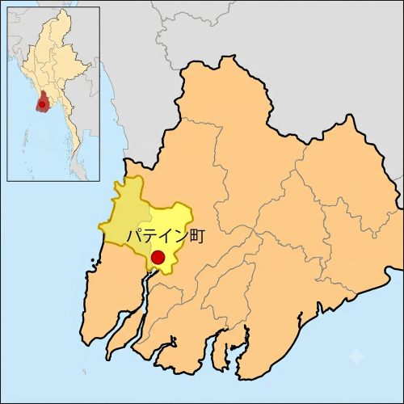
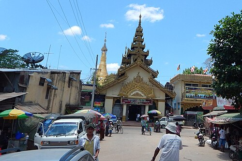
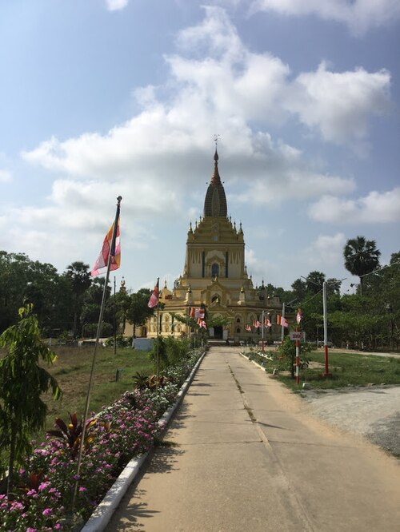
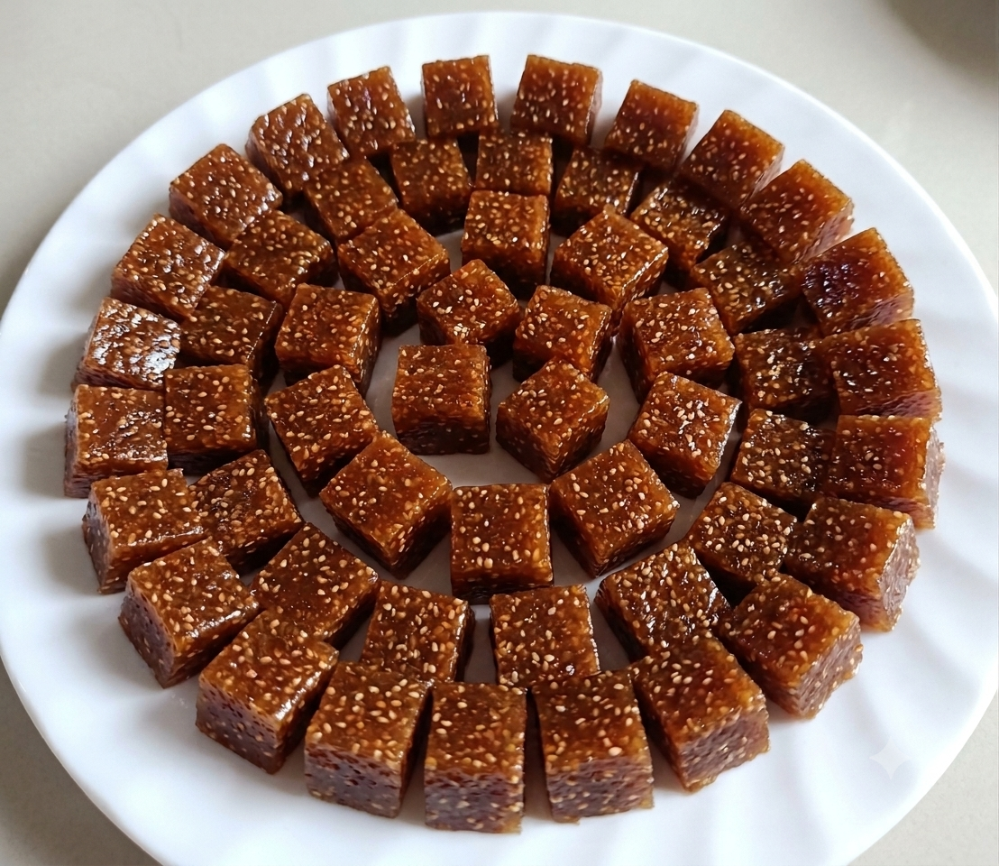
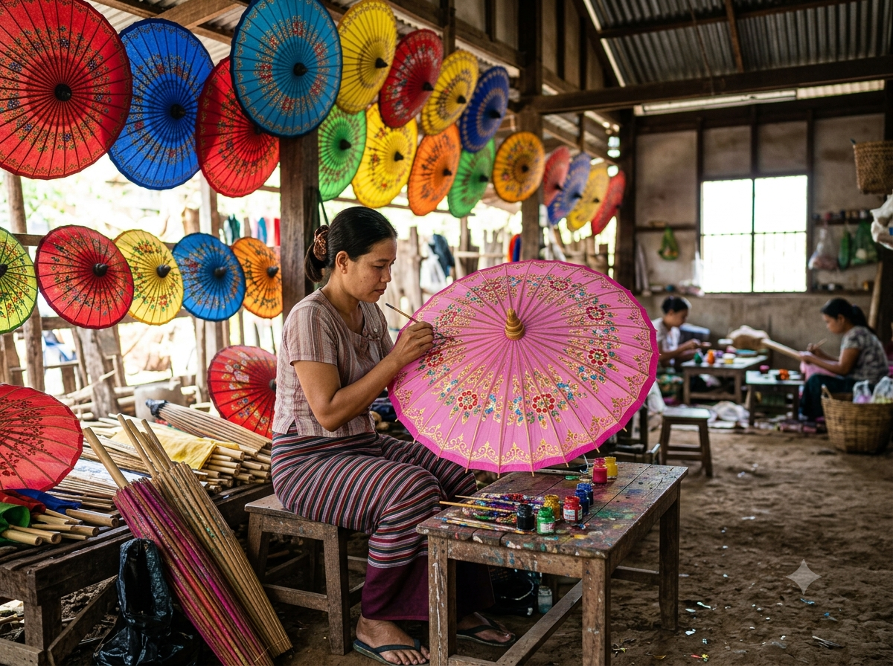

パテイン・ハラワ
パテインの街の中心にそびえ立つ、地域で最も神聖な黄金の仏塔です。インドのアショーカ王が基礎を築いた という伝説があり、数々の王によって増築されてきました。最上部には純金や純銀、数千個の宝石が 散りばめられており、夜には美しくライトアップされ、多くの参拝客や観光客が集まる街のシンボルです。
わたしの生まれた町はミャンマーの パディン市 です。パテイン市は、ミャンマー南部のエーヤワディ地方域に位置する、ヤンゴンに次ぐ国内第二の港湾都市です。 米どころとして知られる広大なデルタ地帯の西端にあり、パテイン川の水運を活かした精米やチーク材の交易 で古くから発展してきました。観光面では、ダイヤモンドやルビーで装飾された壮麗な仏塔「シュエモートー・パヤー」 が有名です。また、伝統工芸品である色鮮やかな「パテイン日傘」の名産地としても国内外で高い知名度を誇っています。
パテイン市は、ミャンマー南部のエーヤワディ地方域に位置する、ヤンゴンに次ぐ国内第二の港湾都市です。 米どころとして知られる広大なデルタ地帯の西端にあり、パテイン川の水運を活かした精米やチーク材の交易 で古くから発展してきました。

| 年 | 人口 |
|---|---|
| 1969年 | 175,000人 |
| 1977年 | 138,000人 |
| 1983年 | 144,092人 |
| 2004年 | 215,600人 |
パテインの主な産業は、米どころであるエーヤワディ・デルタの特性を活かした農業および精米業です。 各地から集まる米の精米・出荷が盛んで、チーク材を扱う製材業も営まれています。また、 伝統工芸として全国的に有名な日傘（パテイン・ティー）製造が代表的であり、陶磁器や綿織物の生産も知られています。 周辺の農地では、ゴマ、落花生、ジュート、トウモロコシ、豆類、唐辛子などの様々な農作物が栽培されており、 地域の経済を支えています
パテインの街の中心にそびえ立つ、地域で最も神聖な黄金の仏塔です。インドのアショーカ王が基礎を築いた という伝説があり、数々の王によって増築されてきました。最上部には純金や純銀、数千個の宝石が 散りばめられており、夜には美しくライトアップされ、多くの参拝客や観光客が集まる街のシンボルです。
イエジー・ウー・パヤーは、ミャンマーの都市パテインにある有名な仏教寺院（パヤー）です。美しく輝く黄金の堂宇や、静かで穏やかな空気が流れる屋根付きの参道（回廊）を持つことで知られています。


ミャンマーのエーヤワディー管区の首府「パテイン」の名物として名高い「パテイン・ハラワ」と「パテイン傘」の2つをご紹介します。
もち米の粉、ココナッツミルク、砂糖、バターなどをじっくりと練り上げて作る、約90年の歴史を持つミャンマーの伝統的なお菓子です。表面にケシの実がまぶされているのが特徴で、ねっとりとした濃厚な甘みとコクが楽しめます。ういろうのように柔らかい「ウェット」と、固めのキャラメルのような「ドライ」の2種類があり、ビーチ観光からの帰り道に買う定番のお土産として全国で愛されています。
竹や綿、シルクなどの天然素材を使い、職人が一つひとつ手作業で仕上げるミャンマーの伝統工芸品の傘です。もともとは僧侶の紫外線対策として作られましたが、美しいグラデーションや異国情緒あふれる鮮やかな手書きのデザインが評判を呼び、今ではミャンマーを代表するお土産や輸出用の美術品として世界中で人気を博しています。

